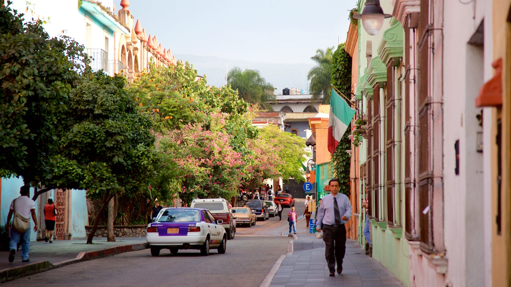
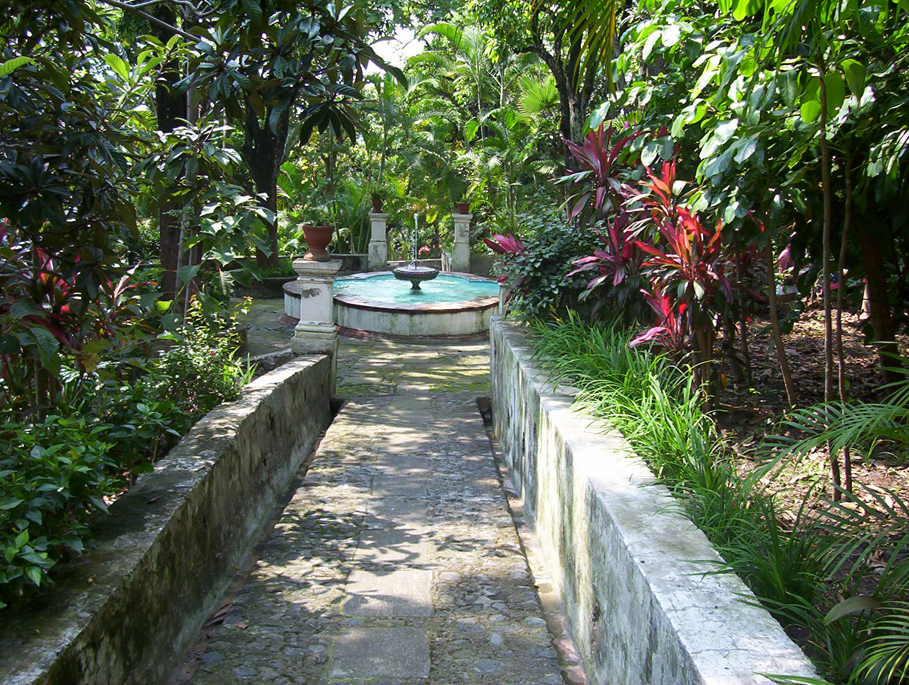
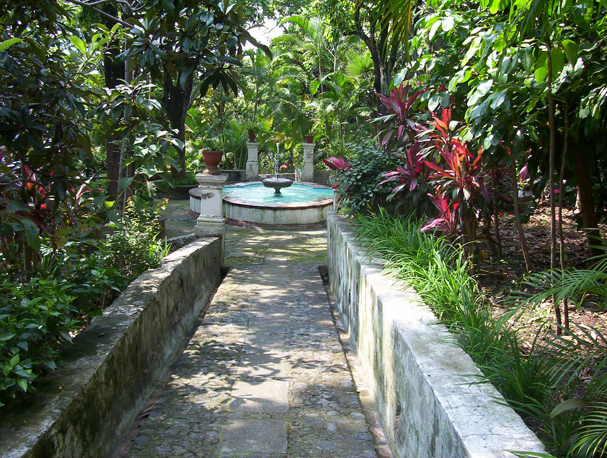
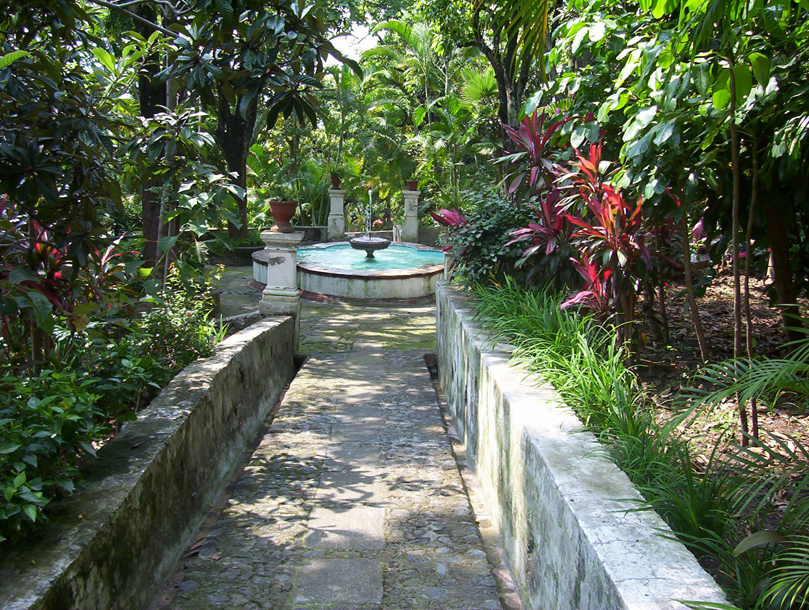

Interesting Cities in Mexico to Visit!
Cuernavaca
Temp: °F
Morelos is a place where you will find tons of cultural significance, natural wonders, and a rich historical legacy. Referred to as the "City of Eternal Spring," Cuernavaca has a very delightful and pleasant climate throughout the year, offering an open invitation to explore its many attractions. Some attractions include the Palacio de Cortes, a fortress-turned-museum that dates to the 16th century, showcasing impressive architecture. The Jardín Borda, once the private retreat of Emperor Maximilian I, showcases magnificent gardens that will show you the bygone era of opulence and splendor. The downtown area is full of vibrant ambience, where you can find beautiful streets adorned with colonial-style buildings. This place offers great hiking trails at the Tepozteco pyramids.


 

